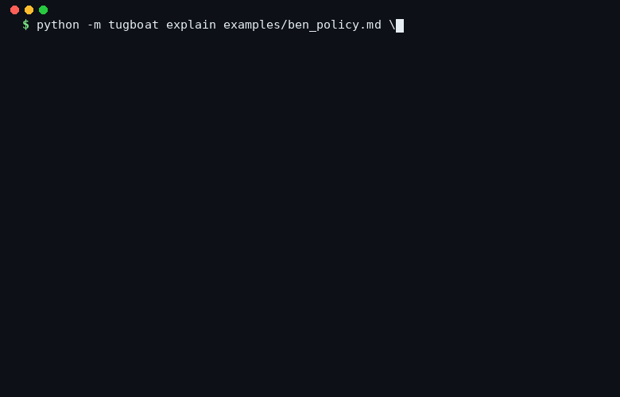

A tiny, declarative routing layer for agent harnesses.
Four axes, one decision, markdown policy, stdlib only.
Every turn goes through the same deterministic function:
route(turn, policy) → decision. The decision spans the four
things every agent actually has to answer.
Which slices to load, with a token budget. Identity is always in.
Whether to delegate, to which scoped spec, and how to merge its side-effects.
Which tools are in scope, which are blocked. External-action gates live here.
Which engine and model id to call. Local by default, cloud on long context.
tug.explain(turn) prints what the router would do
without running anything. Good for code review and postmortems.

Plain markdown. No YAML, no DSL, no code. Rules fire in file order. Later rules win. Two invariants the policy cannot override: external actions always confirm, and identity memory is always loaded.
# Defaults - model.engine: ollama - model.model: qwen2.5:14b-instruct - memory.budget_tokens: 2000 - memory.slices: [identity, recent_daily] ## Rule: local for drafting when: task_class == drafting then: - model.engine = ollama - model.model = qwen2.5:14b-instruct ## Rule: cloud fallback for long context when: context_tokens > 8000 then: - model.engine = cloud - model.model = claude-opus-4-6 - memory.budget_tokens = 6000 ## Rule: delegate research when: task_class == research then: - subagent.delegate = true - subagent.spec_name = researcher - subagent.merge_strategy = merge_memory
from tugboat import Tugboat, Turn from tugboat.channels import ( InMemoryMemoryChannel, DictSkillChannel, MultiEngineModelChannel, ) from tugboat.engines import MockEngine from tugboat.policy import load_policy policy = load_policy("examples/ben_policy.md") tug = Tugboat( policy=policy, memory=InMemoryMemoryChannel(...), skills=DictSkillChannel({"formatter": fmt}), models=MultiEngineModelChannel({ "ollama": MockEngine(), "cloud": MockEngine(), }), ) # Plugin mode: decision only, you run it decision = tug.route(Turn( text="draft a tweet", task_class="drafting", )) # Driver mode: route + execute end-to-end result = tug.execute(Turn( text="research the harness thesis", task_class="research", ))
Three-layer stack. Tugboat is the middle layer — the one most production agents have, but rarely name. Making it explicit is what lets you audit, diff, and eval it.
identity · memory · skills · world-state · RAG · graphs
memory · subagent · skill · model
prompt assembly · tool calls · ReAct loop · retries
fixed across evals; the point is you change everything above it
~1,200 lines of stdlib Python. Zero dependencies. You can read the whole thing in an hour.
route() is pure. Same (turn, policy) → same decision. That's what makes evals actually measure something.
Drop it into any harness as a decision function and ignore execute() entirely. It wraps; it does not replace.
The router is a markdown file, not a code path. Diff it. Version it. Hand it to a non-engineer.
The one thing every harness post-mortem cites as the lever is subagent orchestration. Tugboat makes it the point.
Log every turn. Mine patterns offline. Emit proposed policy edits as markdown diffs for a human to accept.
No pip install. No virtualenv. Python 3.10+ and a terminal.
$ git clone https://github.com/atxgreene/tugboat $ cd tugboat $ python -m unittest discover tests # 34 tests, < 30ms $ python examples/basic_usage.py # end-to-end demo